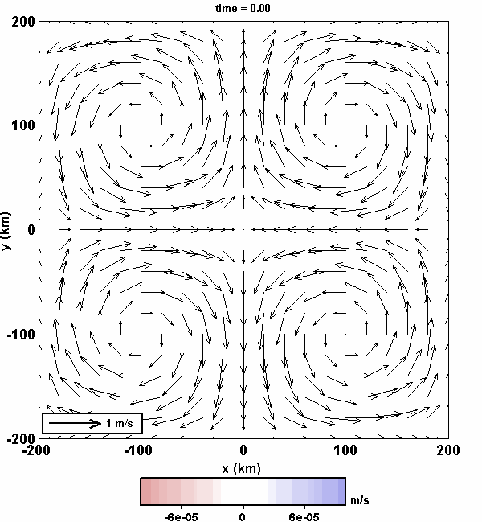
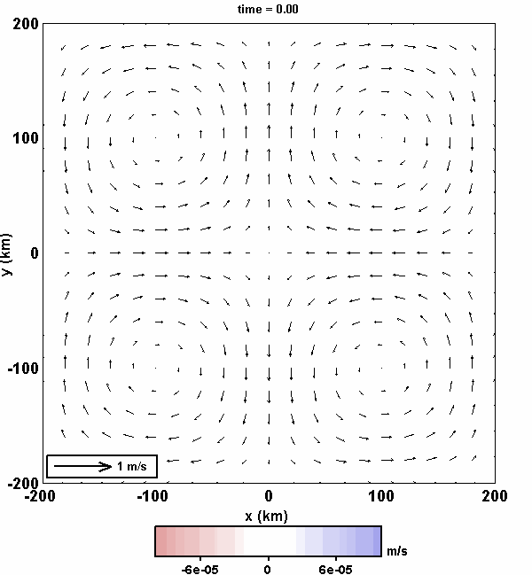
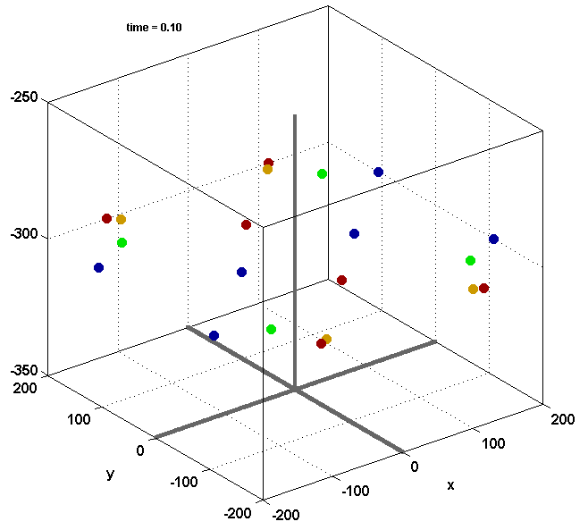
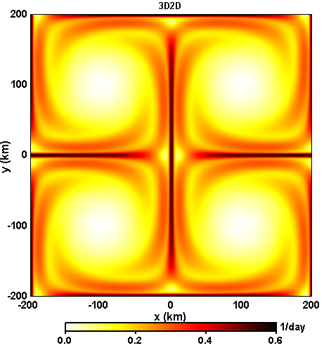
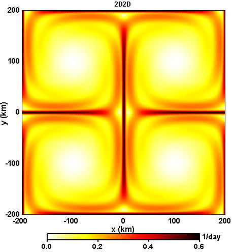
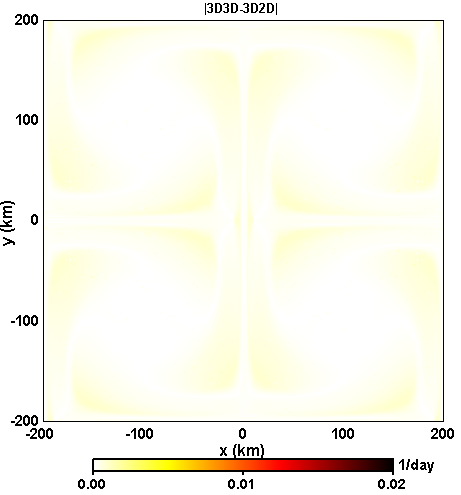
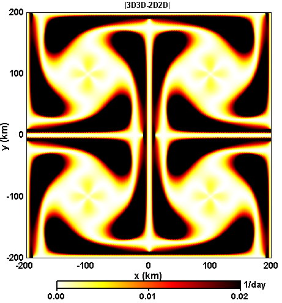
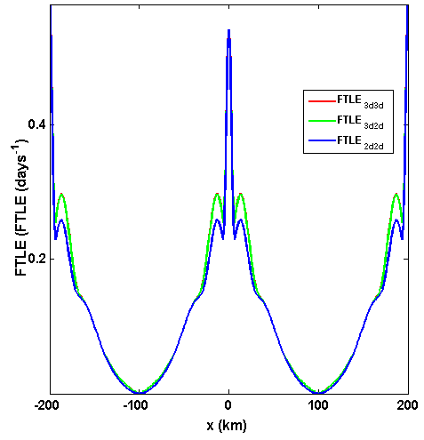

Time Dependent Quadrapole Model:
The flow field:
Using the (+f/ω) for (ua,va) in (22) of the RECAP notes.

Using the (-f/ω) for (ua,va) in (22) of the RECAP notes.

Sample of 8-day Trajectories:

FTLE calculated from 8 day trajectories (ω = 4.5e-6 m/sec, f=4.5e-7 m/sec, N = 2.27e-4):




FTLE Profile plot along y = 100 km:
